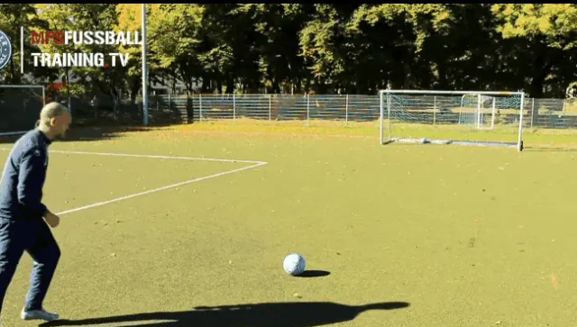
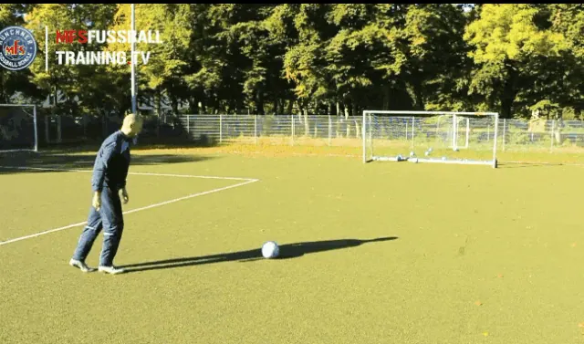
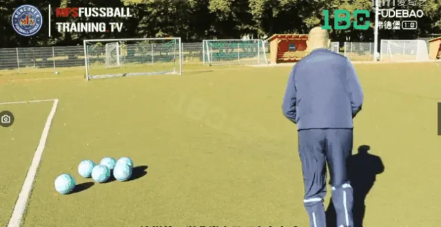
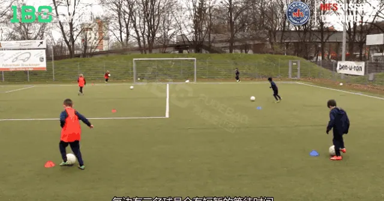
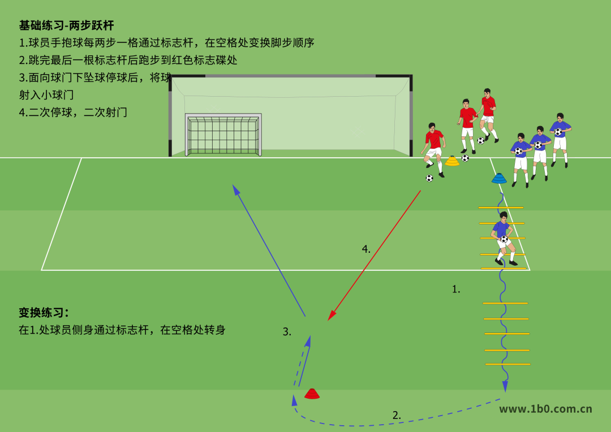
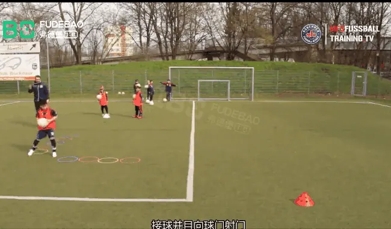

在孩子12岁前，神经系统发育完全前的窗口期，训练的重点应该在技术与身体协调性上。12岁到青春发育前，训练的重点依然要在技术上，今天我们就来看看技术训练的重点。
详见：不同年龄段孩子的训练重点
“技术”，是一个比较抽象的概念，我们在衡量一个小球员技术好不好的时候，往往通过以下三个方面判断：
- 左右脚射门传球能力
- 假动作（过人动作技巧）的运用能力
- 停球及停球摆脱的能力
在日常训练中，我们也需要从这三个方面来提升孩子们的技术能力。
先说左右脚射门传球能力，随着现代足球的发展，双足能力均衡已经变得越来越重要，如果一个球员只用惯用脚可以完成传球和射门，对手防守起来是相对容易的。
对于我们成人来说，训练逆足是很困难的，因为我们的神经系统已经发育完善，我们的神经系统对踢球的动作已经有了肌肉记忆和习惯性的应对方案，当我们换另一只脚时，会有十分别扭的感觉。但对于12岁之前的孩子则不一样，孩子们的神经系统没有完全成型，正是在形成“习惯”的这个阶段，与成人相比，这个阶段训练逆足不会产生太多的“别扭感”，训练起来相对容易。
这里的射门传球能力，实际上是对应德语中的schuss（直译为“射击”），指的是需要发力把球踢出去的动作，对应我们中文语境中的射门长传等场景。
职业球员的标准来衡量，12岁之前，孩子应该掌握的脚法有：
不同高度的球出去后向后旋转的“平快球”脚法，比赛中多用于长传转移，也可以用来射门：

弧线球 ，多用于定位球及传中：

正脚背抽射 ，最常用的射门脚法，掌握的好还可以踢出球路左右飘忽的电梯球效果：

孩子在8岁左右就可以开始练习后旋的平快球和正脚背抽射的脚法，可以先从惯用脚开始，球员需要掌握正确的触球部位等细节，等惯用脚基本掌握后，再开始非惯用脚的练习。
射门长传的脚法，可以不用专门的单独练习，我们将其融入在日常的技术或是协调性训练中去,以此获得更高的训练效率
如上面两个教案的例子，传球点传球脚法，停球停到那边，射门用哪只脚，都是可以进行替换的，根据孩子的水平，由教练进行把控。
如此不断重复，形成肌肉记忆，比赛中正确的技术动作就可以下意识的使用出来。

关于动作技巧的练习，我们在之前的分享中给大家讲了很多，这里就不在赘述，重点强调一下，以职业球员的标准，孩子在青春发育前，绝大部分动作技巧在训练场上应该可以做出动作来。针对背身、正面、侧向、原地等场景，每种场景下球员应该至少熟练掌握2-3种过人动作，每种场景都要能有从左侧或者右侧过人的办法，能在比赛中熟练运用。
再说停球与停球摆脱，这两个概念也可以理解为一个概念，与国内传统的教法不同，慕尼黑足球学校不推荐孩子先掌握将球停在原地停死的各种方法。现代足球节奏越来越快，球员最开始练习停球的时候，就要带着这样的意识“提前把下一步的动作计划好，将球直接停至下一步行动的地方”

还拿上面这个教案举例，球员第二脚射门前，教练可以给球员规定好将球停至哪边然后用哪只脚射门，即最基本的停球也可以融入在日常训练中。
对于地滚球的停球摆脱（也可以叫停球转身），我们最好是在传球练习中进行训练，比如下面这个训练单元：
地面球的停球摆脱同样也是8岁左右开始练习，到12岁时，各种停球摆脱动作左右脚都能熟练掌握。
而高球的停球摆脱，我们要先从下坠球停球开始练习，8岁左右，我们可以将下坠球停球融入在协调与速度练习中去：

等到12岁之后，可以开始专门的下坠球与高球停球摆脱的练习
原文含嵌入视频，本地未保存。
总之，应对各种场景，将球停至各个位置的技术动作，球员要在14岁时完全掌握，即能下意识的使用出来。这样在下一个阶段进行战术训练时，球员的思维可以集中在战术选择上，不用过多去思考技术动作的选用，如此才有可能跟得上现代足球的高节奏（过人动作技巧的重复练习也是这个道理）。
最后，再次提醒所有教练，12岁这个窗口期对于职业球员来说异常重要，在此之前的技术训练是不嫌多的，这个阶段的技术训练能有效刺激孩子神经系统发育，大量的技术练习在当下可能没有特别明显的效果，但可以提升球员未来的上限。
这也是现在诸如德国、荷兰、英国、意大利等足球强国在青训阶段都要给孩子“疯狂”练习技术的原因，窗口期前的技术练的不到位，长大后是无法弥补的。
PS：文章中提到的射门长传脚法，停球摆脱技术等，大家都可以登录一比零足球网（www.1b0.com.cn），在 训练场->训练->技术指导 中找到哦

文字与图片版权归各自权利人所有；排版根据抓取内容整理。